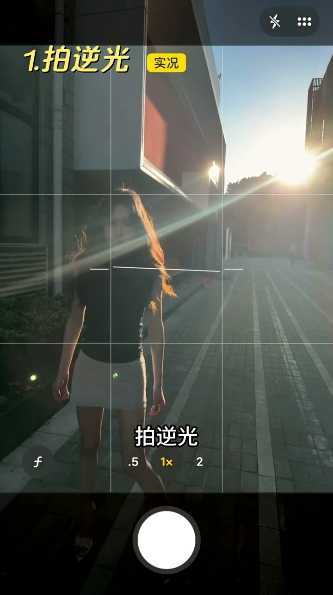
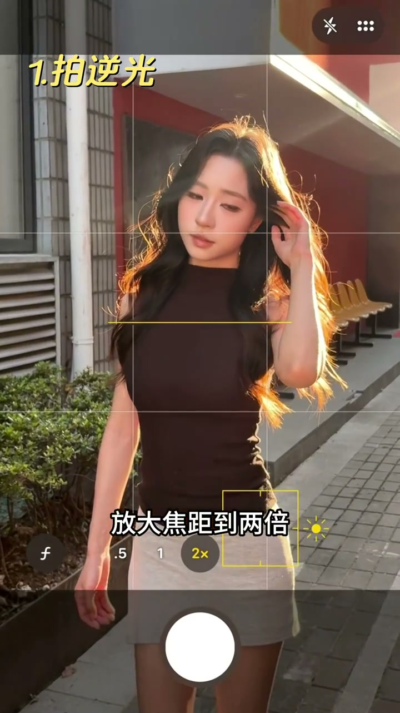
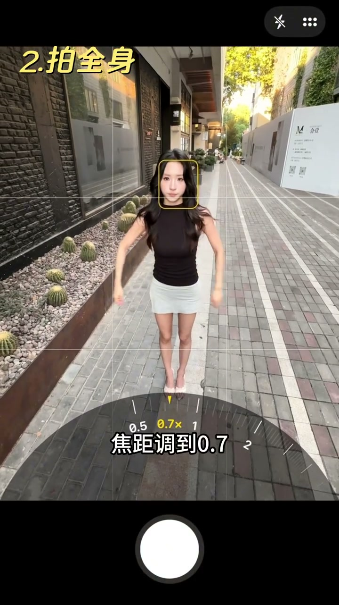
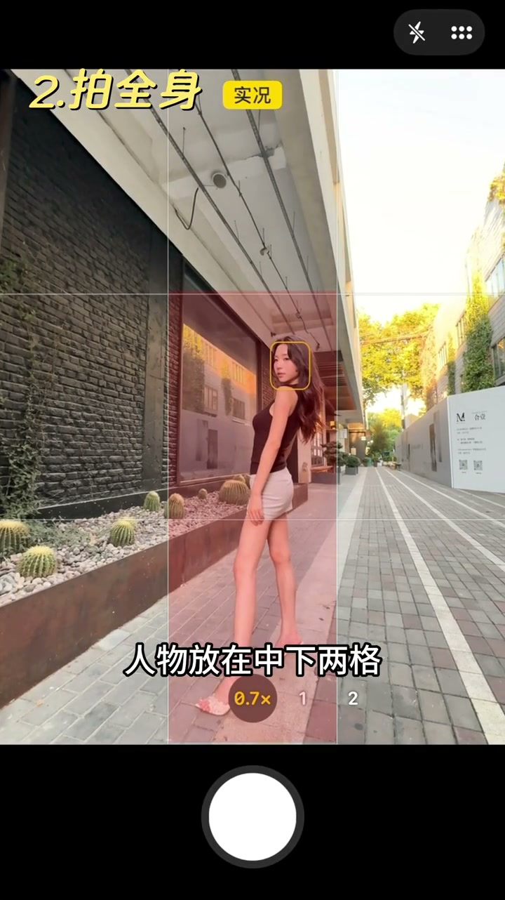
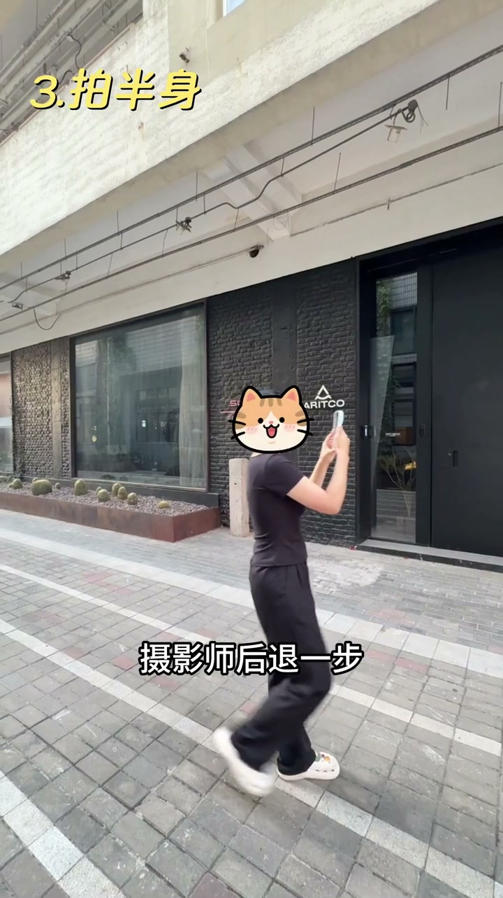
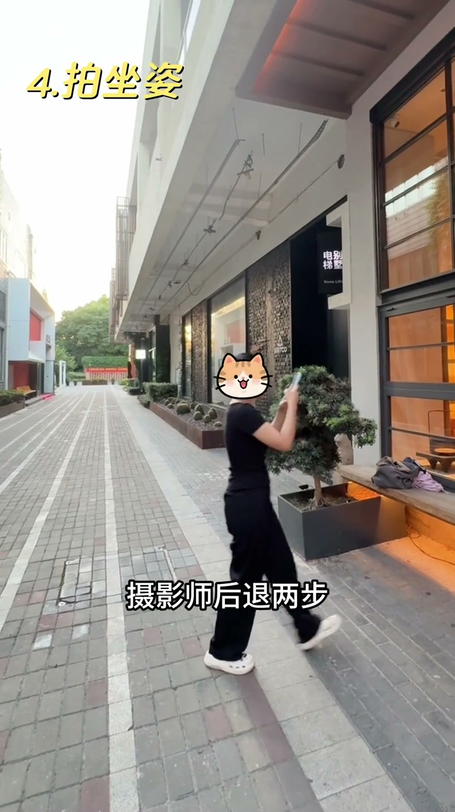
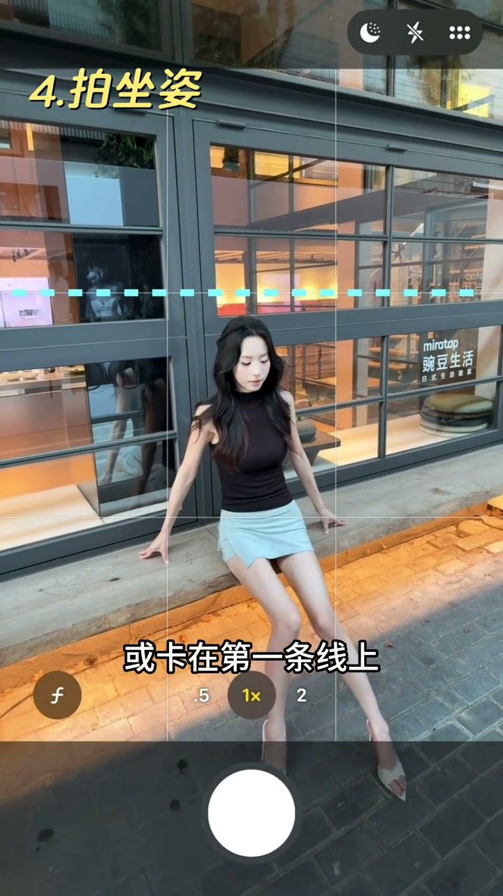

技巧1：拍逆光
00:03拍逆光：摄影师距离模特两个手臂的距离，拿出一把伞，或者用手遮住镜头前的光防止过曝。
00:08放大焦距到两倍，额头卡在第一条线上（九宫格）。

[00:04] 逆光：距模特两臂，伞/手遮光
Backlight: two arm-lengths from the model, umbrella/hand shading the lens

[00:10] 2倍焦距，额头卡第一条线
2x focal length, forehead aligned to the first line
技巧2：拍全身
00:15拍全身：焦距调到0.7，摄影师后退一步蹲下，手机跟模特腰部齐平。
00:19手机垂直于地面，再内扣15度；人物放在中下两格，头顶留白三分之一，脚底贴边。

[00:16] 全身：0.7焦距，退一步蹲下，手机与腰齐平
Full body: 0.7× focal length, step back and squat, phone level with the waist

[00:23] 内扣15°，人物中下格，头顶留白1/3，脚底贴边
15° inward tilt, subject in the middle-lower grid, one-third headroom, feet at the frame edge
技巧3：拍半身
00:28拍半身：摄影师后退一步，手机和头齐平，再向外倾斜30度。
00:32放大焦距到两倍，头顶留白一格。

[00:29] 半身：手机与头齐平，向外倾斜30°
Half body: phone level with the head, tilted outward 30°
[00:33] 2倍焦距，头顶留白一格
2x focal length, one grid space of headroom above
技巧4：拍坐姿
00:38拍坐姿：摄影师后退两步，手机高于模特头顶，镜头跟模特脸平行。
00:42人物放在下两格，头顶不超过或卡在第一条线上；然后腿向鞋前方伸出去，脚贴近画面边缘。

[00:39] 坐姿：退两步，手机高于头顶，镜头与脸平行
Seated: step back twice, phone above the head, lens parallel to the face

[00:46] 下两格构图，腿向前伸、脚贴近画面边缘
Lower-two-grids composition: legs extended forward, feet near the frame edge
神图不是靠运气，是靠参数：机位高度、焦距、留白位置，四个场景照着调就行。